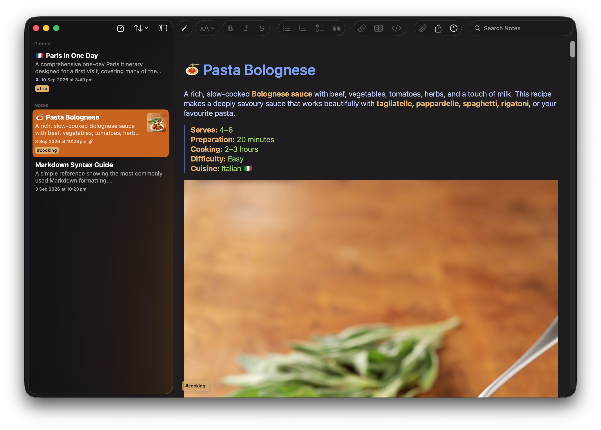
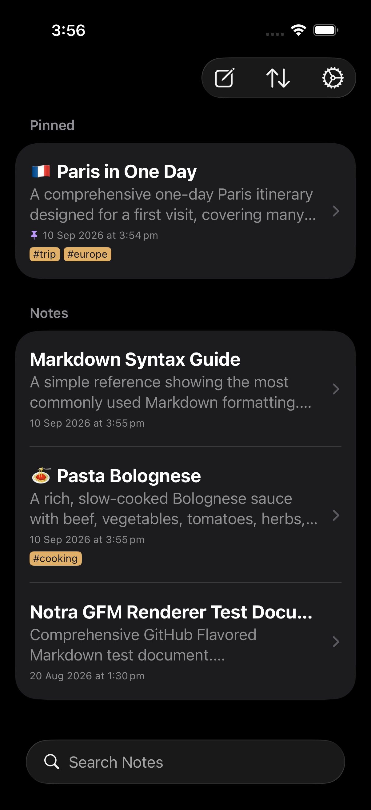
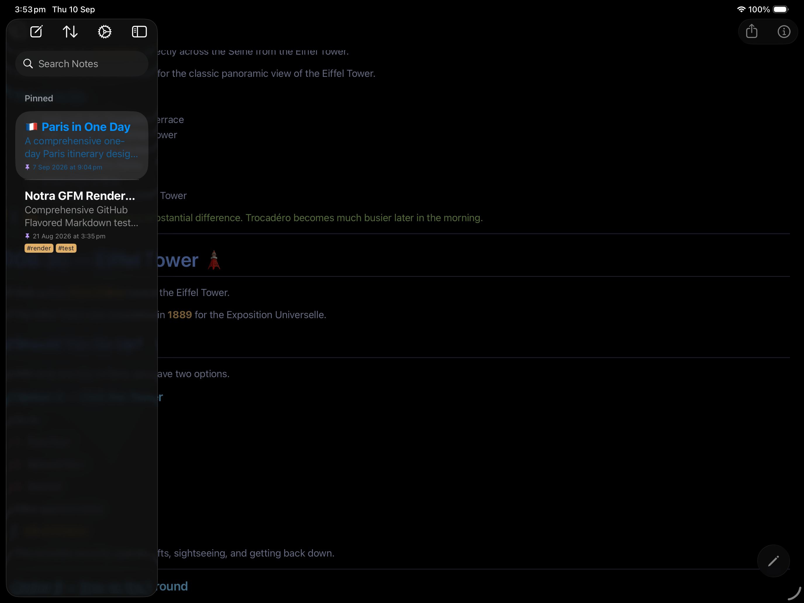

Markdown, naturally
Write in plain text with a clean editor and a live preview that makes formatting feel effortless.
# Project ideas**Bold thoughts** stay clear.- One line at a time
A quieter place for your ideas
Notra is a private Markdown notes app for Mac, iPhone and iPad. Write naturally, keep your files portable, and never trade ownership for convenience.
Tuesday · 08:42
Ideas are better when they have room to breathe. Keep them close, searchable, and yours.
One calm workspace across
A tool that gets out of the way
Notra keeps the writing experience focused while giving your notes the structure to grow with you.
Write in plain text with a clean editor and a live preview that makes formatting feel effortless.
Search, tags and pinned notes keep the right idea close when you need it.
TextBundle support, attachments and images keep your notes portable and complete.
Choose a theme, syntax highlighting and a comfortable reading experience on every screen.
Export a polished PDF when a thought needs to leave the notebook.
Native macOS, iPhone and iPad experiences, designed around the way each device is used.
A better default
Notra is designed around files you can see, move and keep. There is no Notra-hosted notebook quietly holding your life together.
No account required
Open Notra and start writing. No profile to create before your first note.
No advertising or behavioural tracking
Your notes are for you, not for a feed, an ad network or a data broker.
Open, portable content
Markdown and TextBundle-based files stay useful beyond any one app.
A familiar place, everywhere
Use these frames for your product screenshots when they are ready. The layout is already tuned for every screen.

notra-macos.png intoassets/screenshots/
assets/screenshots/
assets/screenshots/A simple way to support the work
Buy Notra once and use it without another monthly bill. Your purchase helps support thoughtful, continued development.
Keep your thoughts close
Notra is available for Mac, iPhone and iPad. Choose your platform and make the next note yours.